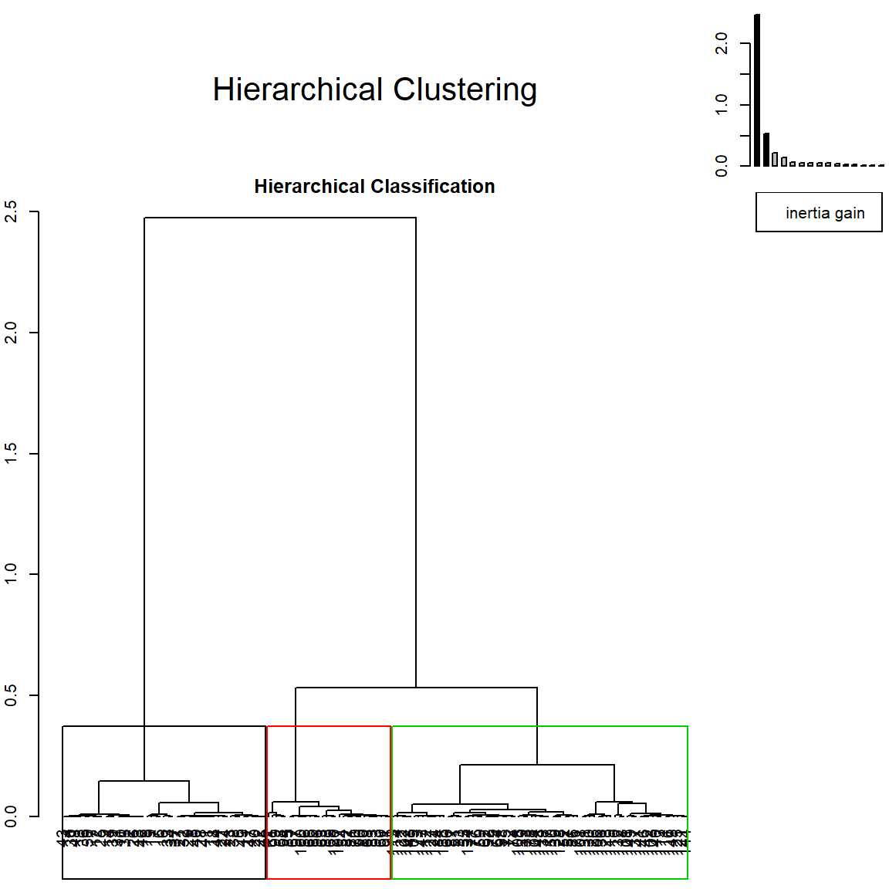
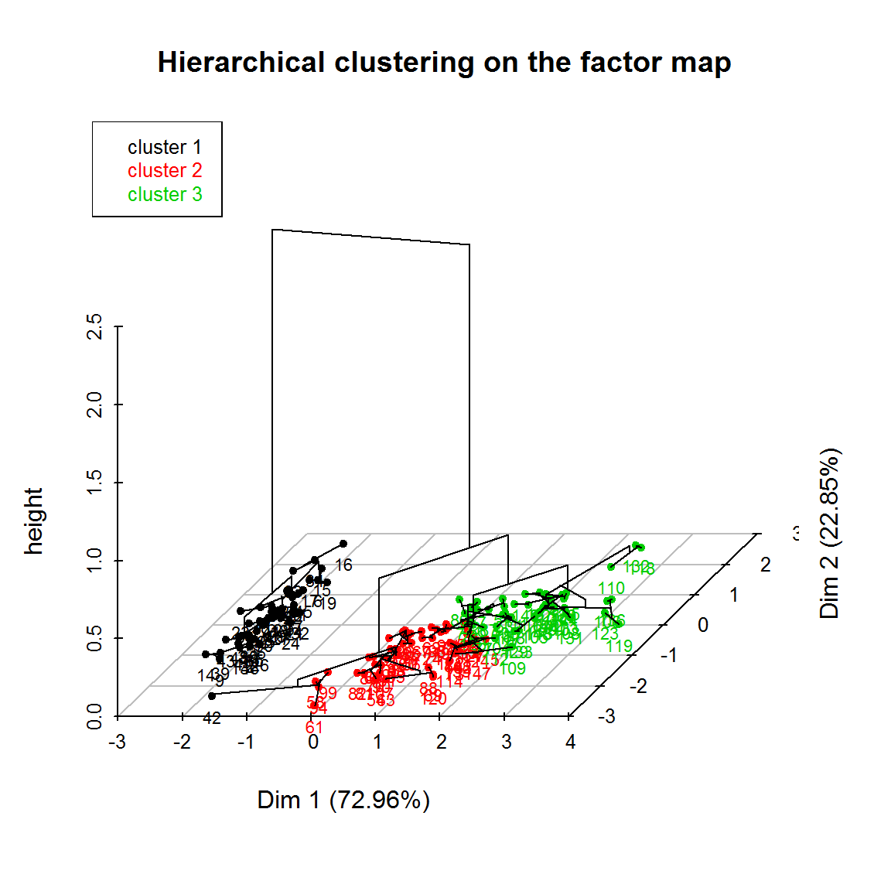
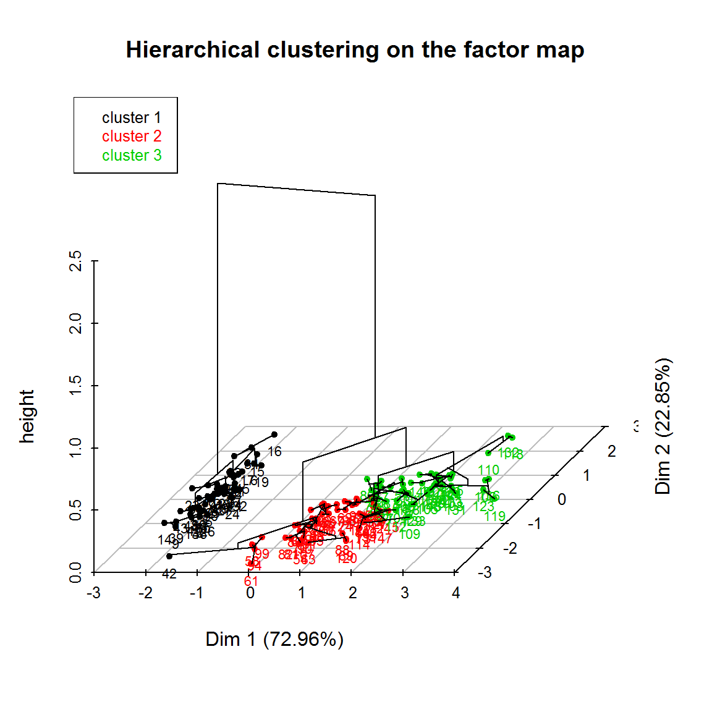
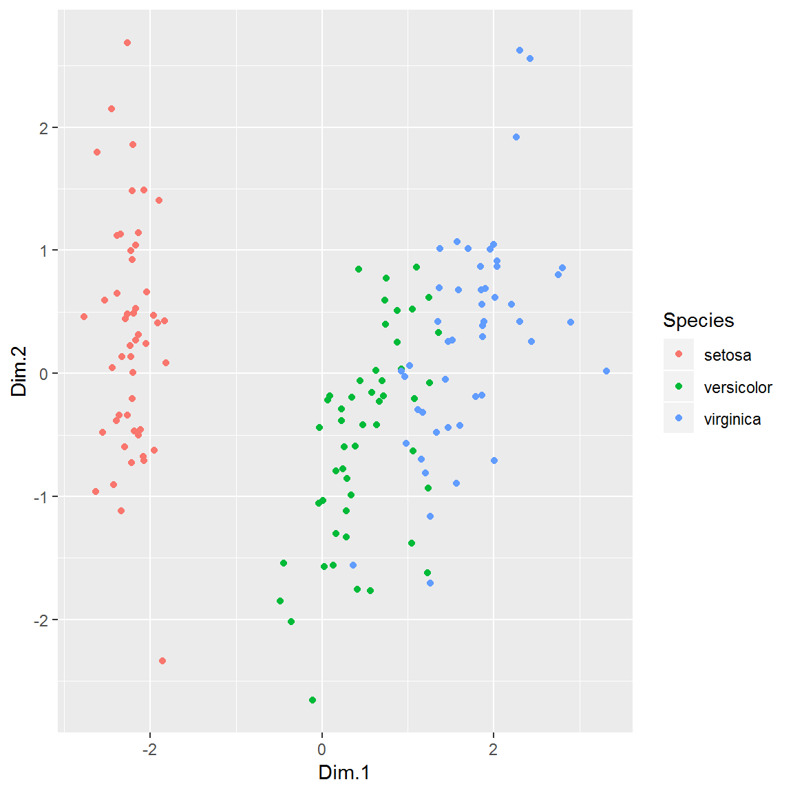

Chapitre 7 Classification (clustering)
Les méthodes de classification (= de partitionnement) servent à délimiter des groupes d’individus, ou typologies, à partir des caractéristiques de ces individus. En particulier, elles visent à distinguer des ensembles au sein desquels les individus se ressemblent plus qu’ils ne ressemblent aux individus des autres groupes.
Il faut être prudent dans leur interprétation : le fait que la méthode réussisse à délimiter des groupes ne démontre en rien la pertinence du découpage (c’est-à-dire l’existence de discontinuités entre des groupes plutôt homogènes). Ce n’est pas parce que vous avez découpé, avec un couteau, une tarte en 5 parts, que ce découpage reflète des discontinuités antérieures. Les méthodes de classifications sont, en quelques sortes, des couteaux …
7.1 Les k-moyennes
7.1.1 Principe
L’algorithme des k-moyennes (ou nuées dynamiques, k-means en anglais) consiste à regrouper les individus dans k classes les plus homogènes possibles. Son fonctionnement est très intuitif et il est très peu coûteux en termes de calcul :
- l’utilisateur choisit le nombre de classes \(k\).
- l’algorithme prend k points aléatoires (les centres) dans le nuage de point des individus.
- chaque individu est affecté au centre le plus proche.
- on calcule le barycentre des points de chaque classe consitutée \(\rightarrow\) les centres bougent.
- on ré-affecte les individus au nouveau centre le plus proche
- on répète les deux étapes précédentes jusqu’à ce que les barycentres ne “bougent plus”
Cet algorithme fonctionne sur des variables quantitatives ; on peut le mobiliser sur les coordonnées factorielles des individus et donc l’appliquer sur des variables initialement qualitative (après avoir fait une ACM / AFC). En pratique, il converge assez rapidement et est donc très efficace, même sur de grands jeux de données.
7.1.2 Mise en oeuvre
Exemple sur les hobbies :
coord <- as.data.frame (acm$ind$coord)
classif <- kmeans (coord, centers = 4)
str (classif)## List of 9
## $ cluster : Named int [1:8403] 4 2 3 3 3 1 3 3 4 3 ...
## ..- attr(*, "names")= chr [1:8403] "11000210" "11000410" "11000610" "11000710" ...
## $ centers : num [1:4, 1:4] -0.4726 -0.052 0.0752 0.6304 -0.053 ...
## ..- attr(*, "dimnames")=List of 2
## .. ..$ : chr [1:4] "1" "2" "3" "4"
## .. ..$ : chr [1:4] "Dim 1" "Dim 2" "Dim 3" "Dim 4"
## $ totss : num 3473
## $ withinss : num [1:4] 470 489 324 439
## $ tot.withinss: num 1721
## $ betweenss : num 1752
## $ size : int [1:4] 2579 2019 1936 1869
## $ iter : int 6
## $ ifault : int 0
## - attr(*, "class")= chr "kmeans"# Taille des clusters
table (classif$cluster)##
## 1 2 3 4
## 2579 2019 1936 1869Remarques :
- Le nombre de classes est choisi de façon arbitraire (comment savoir si ce nombre est correct ?).
- Les résultats changent selon les points initiaux choisis \(\Rightarrow\) 2 exécutions consécutives donneront 2 résultats différents ! Deux solutions pour avoir tout le temps le même résultat :
- fournir les centres initiaux à l’algorithme.
- fixer la “graine” du générateur de nombres aléatoires.
# initialisation des centres avec les quintiles (ça fait 4 points)
# Avec du R de base hyper efficace ^^
init <- sapply (coord, function(x) quantile (x, seq(.2,.8,.2)))
classif <- kmeans (coord, centers = init)
# initialisation du générateur de nombres aléatoires
set.seed (1234)
classif <- kmeans (coord, centers = 4)Pour récupérer les résultat dans son dataframe, il suffit de rajouter le vecteur résultat dans le dataframe initial :
names (coord) <- paste ("Axe", 1:4, sep = "")
coord <- mutate (coord, classe = as.factor (classif$cluster))
ggplot (coord, aes (x = Axe1, y = Axe2, color = classe)) +
geom_point()
ggplot (coord, aes (x = Axe3, y = Axe4, color = classe)) +
geom_point()
Ici on remarque que les classes 2 et 3 s’opposent sur le premier plan factoriel : la classe 2 est plutôt du côté des personnes ayant peu de hobbies, à l’inverse de la classe 3 est composée d’individus ayant des occupations plutôt culturelles. Les classes 1 et 4 sont opposées sur l’axe 3, ce qui signifie que la 1 regroupe des individus aux loisirs plutôt domestiques et la 4 des individus ayant des loisirs de plein air.
7.1.3 Quelques conseils
Pour décrire les classes, on peut, en plus de la représentation sur les axes factoriels, faire un tableau croisé de cette nouvelle variable avec les variables initiales qualitatives ou calculer des rapports de corrélations avec les variables initiales quantitatives.
Pour choisir le nombre de classes, on peut :
- tester plusieurs configuratons et choisir celle qui est la plus “parlante” (on est dans du descriptif, ne pas l’oublier !)
- faire plusieurs classifications et choisir la meilleure au sens d’un indicateur du type \(\dfrac{1}{k} \dfrac{SS_{inter}}{SS_{total}}\)
- repérer le nombre optimal avec une CAH
7.2 La classification ascendante hiérarchique (CAH)
Pourquoi cet acronyme ?
- Classification : on regroupe nos individus dans des classes
- Ascendante : on part du niveau le plus fin (ie des individus)
- Hiérarchique : la méthode aboutit à la construction d’un arbre
Comment faire : Regrouper les individus les plus proches deux à deux, puis les paquets d’individus deux à deux.
- Notion de distance pour déterminer les proximités
- Agrégation des individus puis des groupes d’individus : métrique et hypermétrique
On cherche le nombre optimal de classes d’individus, et pour parvenir à ce nombre, on peut jouer sur plusieurs paramètres :
- Choix des variables prises en compte : initiales ou composantes principales
- Choix de la distance : euclidienne, \(\chi^2\), Mahalanobis…
- Choix de l’hypermétrique : Comment vont être regroupés les individus puis les groupes :
- centres de gravité les plus proches
- saut minimum : on agrège les deux groupes pour lesquels la distance entre les deux individus les plus proches est la plus petite
- diamètre : on agrège les deux groupes pour lesquels la distance entre les deux individus les plus éloignés est la plus petite
Plus de détails sur cette page
En général, on utilise le paramétrage suivant :
- Réaliser la classification à partir des composantes principales signifiantes (on prend en compte l’essentiel de l’inertie mais on laisse de côté un certain “bruit”, qui correspond aux derniers axes factoriels)
- Utiliser la distance euclidienne classique
- Utiliser la méthode de Ward : à chaque étape, agréger les individus (groupes) font perdre le moins d’inertie inter-classes
\(\Rightarrow\) la fonction HCPC du package factominer le fait directement pour vous.
hc <- HCPC (acm, nb.clust = 5, graph=F)
str(hc)## List of 5
## $ data.clust:'data.frame': 8403 obs. of 24 variables:
## ..$ Reading : Factor w/ 2 levels "Reading_0","Reading_1": 2 2 2 2 2 1 1 2 2 2 ...
## ..$ Listening music: Factor w/ 2 levels "Listening music_0",..: 2 1 2 1 2 1 2 2 2 2 ...
## ..$ Cinema : Factor w/ 2 levels "Cinema_0","Cinema_1": 2 1 1 1 2 1 1 2 2 2 ...
## ..$ Show : Factor w/ 2 levels "Show_0","Show_1": 2 1 1 1 2 1 1 2 2 1 ...
## ..$ Exhibition : Factor w/ 2 levels "Exhibition_0",..: 2 2 2 2 1 1 1 2 1 2 ...
## ..$ Computer : Factor w/ 2 levels "Computer_0","Computer_1": 1 1 1 1 1 1 2 2 2 1 ...
## ..$ Sport : Factor w/ 2 levels "Sport_0","Sport_1": 2 2 1 2 1 1 2 1 2 1 ...
## ..$ Walking : Factor w/ 2 levels "Walking_0","Walking_1": 2 2 1 1 2 1 1 1 2 1 ...
## ..$ Travelling : Factor w/ 2 levels "Travelling_0",..: 2 1 2 2 1 1 1 2 2 1 ...
## ..$ Playing music : Factor w/ 2 levels "Playing music_0",..: 1 1 1 1 1 1 1 1 2 2 ...
## ..$ Collecting : Factor w/ 2 levels "Collecting_0",..: 1 2 1 1 1 1 1 1 1 1 ...
## ..$ Volunteering : Factor w/ 2 levels "Volunteering_0",..: 2 2 1 1 1 1 1 1 1 1 ...
## ..$ Mechanic : Factor w/ 2 levels "Mechanic_0","Mechanic_1": 2 2 1 1 1 2 2 1 1 2 ...
## ..$ Gardening : Factor w/ 2 levels "Gardening_0",..: 1 2 1 1 1 1 1 1 1 2 ...
## ..$ Knitting : Factor w/ 2 levels "Knitting_0","Knitting_1": 1 1 1 1 1 1 1 1 1 1 ...
## ..$ Cooking : Factor w/ 2 levels "Cooking_0","Cooking_1": 1 1 1 1 1 1 1 1 1 1 ...
## ..$ Fishing : Factor w/ 2 levels "Fishing_0","Fishing_1": 1 1 1 1 1 1 1 1 1 1 ...
## ..$ TV : Factor w/ 5 levels "TV_0","TV_1",..: 3 5 5 2 4 4 4 1 2 2 ...
## ..$ Sex : Factor w/ 2 levels "F","M": 1 2 1 2 2 2 2 2 1 1 ...
## ..$ Age : Factor w/ 8 levels "(25,35]","(35,45]",..: 4 3 1 6 4 3 2 8 2 1 ...
## ..$ Marital status : Factor w/ 5 levels "Divorcee","Married",..: 2 2 3 2 2 2 2 4 4 4 ...
## ..$ Profession : Factor w/ 8 levels "Employee","Foreman",..: 3 6 3 6 1 4 1 6 3 1 ...
## ..$ nb.activitees : int [1:8403] 11 9 5 5 6 2 5 7 10 8 ...
## ..$ clust : Factor w/ 5 levels "1","2","3","4",..: 5 3 4 4 4 1 4 4 5 4 ...
## $ desc.var :List of 5
## ..$ test.chi2 : num [1:22, 1:2] 0 0 0 0 0 0 0 0 0 0 ...
## .. ..- attr(*, "dimnames")=List of 2
## .. .. ..$ : chr [1:22] "Reading" "Listening.music" "Cinema" "Show" ...
## .. .. ..$ : chr [1:2] "p.value" "df"
## ..$ category :List of 5
## .. ..$ 1: num [1:54, 1:5] 39.4 56.3 40 36.3 38.7 ...
## .. .. ..- attr(*, "dimnames")=List of 2
## .. .. .. ..$ : chr [1:54] "Computer=Computer_0" "Listening.music=Listening music_0" "Cinema=Cinema_0" "Exhibition=Exhibition_0" ...
## .. .. .. ..$ : chr [1:5] "Cla/Mod" "Mod/Cla" "Global" "p.value" ...
## .. ..$ 2: num [1:56, 1:5] 60.9 26.7 28.6 23.9 24.1 ...
## .. .. ..- attr(*, "dimnames")=List of 2
## .. .. .. ..$ : chr [1:56] "Knitting=Knitting_1" "Sex=F" "Cooking=Cooking_1" "Sport=Sport_0" ...
## .. .. .. ..$ : chr [1:5] "Cla/Mod" "Mod/Cla" "Global" "p.value" ...
## .. ..$ 3: num [1:51, 1:5] 68.3 29.6 28.6 25.8 17.9 ...
## .. .. ..- attr(*, "dimnames")=List of 2
## .. .. .. ..$ : chr [1:51] "Fishing=Fishing_1" "Mechanic=Mechanic_1" "Gardening=Gardening_1" "Sex=M" ...
## .. .. .. ..$ : chr [1:5] "Cla/Mod" "Mod/Cla" "Global" "p.value" ...
## .. ..$ 4: num [1:46, 1:5] 31 36.4 26.7 33.4 50.2 ...
## .. .. ..- attr(*, "dimnames")=List of 2
## .. .. .. ..$ : chr [1:46] "Gardening=Gardening_0" "Cinema=Cinema_1" "Listening.music=Listening music_1" "Computer=Computer_1" ...
## .. .. .. ..$ : chr [1:5] "Cla/Mod" "Mod/Cla" "Global" "p.value" ...
## .. ..$ 5: num [1:58, 1:5] 44.4 54.2 54.2 43 41.6 ...
## .. .. ..- attr(*, "dimnames")=List of 2
## .. .. .. ..$ : chr [1:58] "Travelling=Travelling_1" "Exhibition=Exhibition_1" "Show=Show_1" "Cinema=Cinema_1" ...
## .. .. .. ..$ : chr [1:5] "Cla/Mod" "Mod/Cla" "Global" "p.value" ...
## ..$ quanti.var: num [1, 1:2] 0.764 0
## .. ..- attr(*, "dimnames")=List of 2
## .. .. ..$ : chr "nb.activitees"
## .. .. ..$ : chr [1:2] "Eta2" "P-value"
## ..$ quanti :List of 5
## .. ..$ 1: num [1, 1:6] -63.37 2.95 6.87 1.23 3.38 ...
## .. .. ..- attr(*, "dimnames")=List of 2
## .. .. .. ..$ : chr "nb.activitees"
## .. .. .. ..$ : chr [1:6] "v.test" "Mean in category" "Overall mean" "sd in category" ...
## .. ..$ 2: NULL
## .. ..$ 3: NULL
## .. ..$ 4: NULL
## .. ..$ 5: num [1, 1:6] 66.17 11.59 6.87 1.72 3.38 ...
## .. .. ..- attr(*, "dimnames")=List of 2
## .. .. .. ..$ : chr "nb.activitees"
## .. .. .. ..$ : chr [1:6] "v.test" "Mean in category" "Overall mean" "sd in category" ...
## ..$ call :List of 3
## .. ..$ num.var: int 24
## .. ..$ proba : num 0.05
## .. ..$ row.w : num [1:8403] 1 1 1 1 1 1 1 1 1 1 ...
## ..- attr(*, "class")= chr [1:2] "catdes" "list "
## $ desc.axes :List of 3
## ..$ quanti.var: num [1:4, 1:2] 0.776 0.506 0.476 0.128 0 ...
## .. ..- attr(*, "dimnames")=List of 2
## .. .. ..$ : chr [1:4] "Dim.1" "Dim.2" "Dim.3" "Dim.4"
## .. .. ..$ : chr [1:2] "Eta2" "P-value"
## ..$ quanti :List of 5
## .. ..$ 1: num [1:4, 1:6] 21.0736 1.9726 -18.5427 -59.571 0.0965 ...
## .. .. ..- attr(*, "dimnames")=List of 2
## .. .. .. ..$ : chr [1:4] "Dim.4" "Dim.3" "Dim.2" "Dim.1"
## .. .. .. ..$ : chr [1:6] "v.test" "Mean in category" "Overall mean" "sd in category" ...
## .. ..$ 2: num [1:4, 1:6] 37.238 -4.5 -8.356 -48.933 0.255 ...
## .. .. ..- attr(*, "dimnames")=List of 2
## .. .. .. ..$ : chr [1:4] "Dim.2" "Dim.4" "Dim.1" "Dim.3"
## .. .. .. ..$ : chr [1:6] "v.test" "Mean in category" "Overall mean" "sd in category" ...
## .. ..$ 3: num [1:4, 1:6] 48.528 35.131 -7.715 -15.363 0.335 ...
## .. .. ..- attr(*, "dimnames")=List of 2
## .. .. .. ..$ : chr [1:4] "Dim.3" "Dim.2" "Dim.1" "Dim.4"
## .. .. .. ..$ : chr [1:6] "v.test" "Mean in category" "Overall mean" "sd in category" ...
## .. ..$ 4: num [1:4, 1:6] 10.3386 -2.5593 -20.7593 -47.4864 0.0991 ...
## .. .. ..- attr(*, "dimnames")=List of 2
## .. .. .. ..$ : chr [1:4] "Dim.1" "Dim.3" "Dim.4" "Dim.2"
## .. .. .. ..$ : chr [1:6] "v.test" "Mean in category" "Overall mean" "sd in category" ...
## .. ..$ 5: num [1:3, 1:6] 68.5649 15.4312 2.7695 0.6434 0.0817 ...
## .. .. ..- attr(*, "dimnames")=List of 2
## .. .. .. ..$ : chr [1:3] "Dim.1" "Dim.4" "Dim.3"
## .. .. .. ..$ : chr [1:6] "v.test" "Mean in category" "Overall mean" "sd in category" ...
## ..$ call :List of 3
## .. ..$ num.var: int 5
## .. ..$ proba : num 0.05
## .. ..$ row.w : num [1:8403] 1 1 1 1 1 1 1 1 1 1 ...
## ..- attr(*, "class")= chr [1:2] "catdes" "list "
## $ call :List of 8
## ..$ t :List of 6
## .. ..$ res :List of 7
## .. .. ..$ eig : num [1:21, 1:3] 0.1977 0.0806 0.072 0.0629 0.0585 ...
## .. .. .. ..- attr(*, "dimnames")=List of 2
## .. .. .. .. ..$ : chr [1:21] "dim 1" "dim 2" "dim 3" "dim 4" ...
## .. .. .. .. ..$ : chr [1:3] "eigenvalue" "percentage of variance" "cumulative percentage of variance"
## .. .. ..$ call :List of 14
## .. .. .. ..$ X :'data.frame': 8403 obs. of 23 variables:
## .. .. .. .. ..$ Reading : Factor w/ 2 levels "Reading_0","Reading_1": 1 1 1 1 1 1 1 1 1 1 ...
## .. .. .. .. ..$ Listening music: Factor w/ 2 levels "Listening music_0",..: 1 1 1 1 1 1 1 1 1 1 ...
## .. .. .. .. ..$ Cinema : Factor w/ 2 levels "Cinema_0","Cinema_1": 1 1 1 1 1 1 1 1 1 1 ...
## .. .. .. .. ..$ Show : Factor w/ 2 levels "Show_0","Show_1": 1 1 1 1 1 1 1 1 1 1 ...
## .. .. .. .. ..$ Exhibition : Factor w/ 2 levels "Exhibition_0",..: 1 1 1 1 1 1 1 1 1 1 ...
## .. .. .. .. ..$ Computer : Factor w/ 2 levels "Computer_0","Computer_1": 1 1 1 1 1 1 1 1 1 1 ...
## .. .. .. .. ..$ Sport : Factor w/ 2 levels "Sport_0","Sport_1": 1 1 1 1 1 1 1 1 1 1 ...
## .. .. .. .. ..$ Walking : Factor w/ 2 levels "Walking_0","Walking_1": 1 1 1 1 1 1 1 1 1 1 ...
## .. .. .. .. ..$ Travelling : Factor w/ 2 levels "Travelling_0",..: 1 1 1 1 1 1 1 1 1 1 ...
## .. .. .. .. ..$ Playing music : Factor w/ 2 levels "Playing music_0",..: 1 1 1 1 1 1 1 1 1 1 ...
## .. .. .. .. ..$ Collecting : Factor w/ 2 levels "Collecting_0",..: 1 1 1 1 1 1 1 1 1 1 ...
## .. .. .. .. ..$ Volunteering : Factor w/ 2 levels "Volunteering_0",..: 1 1 1 1 1 1 1 1 1 1 ...
## .. .. .. .. ..$ Mechanic : Factor w/ 2 levels "Mechanic_0","Mechanic_1": 1 1 1 1 1 1 1 1 1 1 ...
## .. .. .. .. ..$ Gardening : Factor w/ 2 levels "Gardening_0",..: 1 1 1 1 1 1 1 1 1 1 ...
## .. .. .. .. ..$ Knitting : Factor w/ 2 levels "Knitting_0","Knitting_1": 1 1 1 1 1 1 1 1 1 1 ...
## .. .. .. .. ..$ Cooking : Factor w/ 2 levels "Cooking_0","Cooking_1": 1 1 1 1 1 1 1 1 1 1 ...
## .. .. .. .. ..$ Fishing : Factor w/ 2 levels "Fishing_0","Fishing_1": 1 1 1 1 1 1 1 1 1 1 ...
## .. .. .. .. ..$ TV : Factor w/ 5 levels "TV_0","TV_1",..: 1 1 1 1 1 1 1 1 1 1 ...
## .. .. .. .. ..$ Sex : Factor w/ 2 levels "F","M": 1 2 1 1 2 2 1 1 1 1 ...
## .. .. .. .. ..$ Age : Factor w/ 8 levels "(25,35]","(35,45]",..: 6 1 5 3 7 5 7 5 3 4 ...
## .. .. .. .. ..$ Marital status : Factor w/ 5 levels "Divorcee","Married",..: 3 4 5 2 5 2 5 5 1 2 ...
## .. .. .. .. ..$ Profession : Factor w/ 8 levels "Employee","Foreman",..: 3 6 1 4 6 8 6 8 1 6 ...
## .. .. .. .. ..$ nb.activitees : int [1:8403] 0 0 0 0 0 0 0 0 0 0 ...
## .. .. .. ..$ marge.col : Named num [1:39] 0.0182 0.0373 0.0162 0.0393 0.0333 ...
## .. .. .. .. ..- attr(*, "names")= chr [1:39] "Reading_0" "Reading_1" "Listening music_0" "Listening music_1" ...
## .. .. .. ..$ marge.row : Named num [1:8403] 0.000119 0.000119 0.000119 0.000119 0.000119 ...
## .. .. .. .. ..- attr(*, "names")= chr [1:8403] "11000210" "11000410" "11000610" "11000710" ...
## .. .. .. ..$ ncp : num 4
## .. .. .. ..$ row.w : num [1:8403] 1 1 1 1 1 1 1 1 1 1 ...
## .. .. .. ..$ excl : NULL
## .. .. .. ..$ call : language MCA(X = hobbies, ncp = 4, quanti.sup = 23, quali.sup = 19:22, graph = F)
## .. .. .. ..$ Xtot :'data.frame': 8403 obs. of 62 variables:
## .. .. .. .. ..$ Reading_0 : int [1:8403] 0 0 0 0 0 1 1 0 0 0 ...
## .. .. .. .. ..$ Reading_1 : int [1:8403] 1 1 1 1 1 0 0 1 1 1 ...
## .. .. .. .. ..$ Listening music_0: int [1:8403] 0 1 0 1 0 1 0 0 0 0 ...
## .. .. .. .. ..$ Listening music_1: int [1:8403] 1 0 1 0 1 0 1 1 1 1 ...
## .. .. .. .. ..$ Cinema_0 : int [1:8403] 0 1 1 1 0 1 1 0 0 0 ...
## .. .. .. .. ..$ Cinema_1 : int [1:8403] 1 0 0 0 1 0 0 1 1 1 ...
## .. .. .. .. ..$ Show_0 : int [1:8403] 0 1 1 1 0 1 1 0 0 1 ...
## .. .. .. .. ..$ Show_1 : int [1:8403] 1 0 0 0 1 0 0 1 1 0 ...
## .. .. .. .. ..$ Exhibition_0 : int [1:8403] 0 0 0 0 1 1 1 0 1 0 ...
## .. .. .. .. ..$ Exhibition_1 : int [1:8403] 1 1 1 1 0 0 0 1 0 1 ...
## .. .. .. .. ..$ Computer_0 : int [1:8403] 1 1 1 1 1 1 0 0 0 1 ...
## .. .. .. .. ..$ Computer_1 : int [1:8403] 0 0 0 0 0 0 1 1 1 0 ...
## .. .. .. .. ..$ Sport_0 : int [1:8403] 0 0 1 0 1 1 0 1 0 1 ...
## .. .. .. .. ..$ Sport_1 : int [1:8403] 1 1 0 1 0 0 1 0 1 0 ...
## .. .. .. .. ..$ Walking_0 : int [1:8403] 0 0 1 1 0 1 1 1 0 1 ...
## .. .. .. .. ..$ Walking_1 : int [1:8403] 1 1 0 0 1 0 0 0 1 0 ...
## .. .. .. .. ..$ Travelling_0 : int [1:8403] 0 1 0 0 1 1 1 0 0 1 ...
## .. .. .. .. ..$ Travelling_1 : int [1:8403] 1 0 1 1 0 0 0 1 1 0 ...
## .. .. .. .. ..$ Playing music_0 : int [1:8403] 1 1 1 1 1 1 1 1 0 0 ...
## .. .. .. .. ..$ Playing music_1 : int [1:8403] 0 0 0 0 0 0 0 0 1 1 ...
## .. .. .. .. ..$ Collecting_0 : int [1:8403] 1 0 1 1 1 1 1 1 1 1 ...
## .. .. .. .. ..$ Collecting_1 : int [1:8403] 0 1 0 0 0 0 0 0 0 0 ...
## .. .. .. .. ..$ Volunteering_0 : int [1:8403] 0 0 1 1 1 1 1 1 1 1 ...
## .. .. .. .. ..$ Volunteering_1 : int [1:8403] 1 1 0 0 0 0 0 0 0 0 ...
## .. .. .. .. ..$ Mechanic_0 : int [1:8403] 0 0 1 1 1 0 0 1 1 0 ...
## .. .. .. .. ..$ Mechanic_1 : int [1:8403] 1 1 0 0 0 1 1 0 0 1 ...
## .. .. .. .. ..$ Gardening_0 : int [1:8403] 1 0 1 1 1 1 1 1 1 0 ...
## .. .. .. .. ..$ Gardening_1 : int [1:8403] 0 1 0 0 0 0 0 0 0 1 ...
## .. .. .. .. ..$ Knitting_0 : int [1:8403] 1 1 1 1 1 1 1 1 1 1 ...
## .. .. .. .. ..$ Knitting_1 : int [1:8403] 0 0 0 0 0 0 0 0 0 0 ...
## .. .. .. .. ..$ Cooking_0 : int [1:8403] 1 1 1 1 1 1 1 1 1 1 ...
## .. .. .. .. ..$ Cooking_1 : int [1:8403] 0 0 0 0 0 0 0 0 0 0 ...
## .. .. .. .. ..$ Fishing_0 : int [1:8403] 1 1 1 1 1 1 1 1 1 1 ...
## .. .. .. .. ..$ Fishing_1 : int [1:8403] 0 0 0 0 0 0 0 0 0 0 ...
## .. .. .. .. ..$ TV_0 : int [1:8403] 0 0 0 0 0 0 0 1 0 0 ...
## .. .. .. .. ..$ TV_1 : int [1:8403] 0 0 0 1 0 0 0 0 1 1 ...
## .. .. .. .. ..$ TV_2 : int [1:8403] 1 0 0 0 0 0 0 0 0 0 ...
## .. .. .. .. ..$ TV_3 : int [1:8403] 0 0 0 0 1 1 1 0 0 0 ...
## .. .. .. .. ..$ TV_4 : int [1:8403] 0 1 1 0 0 0 0 0 0 0 ...
## .. .. .. .. ..$ F : int [1:8403] 1 0 1 0 0 0 0 0 1 1 ...
## .. .. .. .. ..$ M : int [1:8403] 0 1 0 1 1 1 1 1 0 0 ...
## .. .. .. .. ..$ (25,35] : int [1:8403] 0 0 1 0 0 0 0 0 0 1 ...
## .. .. .. .. ..$ (35,45] : int [1:8403] 0 0 0 0 0 0 1 0 1 0 ...
## .. .. .. .. ..$ (45,55] : int [1:8403] 0 1 0 0 0 1 0 0 0 0 ...
## .. .. .. .. ..$ (55,65] : int [1:8403] 1 0 0 0 1 0 0 0 0 0 ...
## .. .. .. .. ..$ (65,75] : int [1:8403] 0 0 0 0 0 0 0 0 0 0 ...
## .. .. .. .. ..$ (75,85] : int [1:8403] 0 0 0 1 0 0 0 0 0 0 ...
## .. .. .. .. ..$ (85,100] : int [1:8403] 0 0 0 0 0 0 0 0 0 0 ...
## .. .. .. .. ..$ [15,25] : int [1:8403] 0 0 0 0 0 0 0 1 0 0 ...
## .. .. .. .. ..$ Divorcee : int [1:8403] 0 0 0 0 0 0 0 0 0 0 ...
## .. .. .. .. ..$ Married : int [1:8403] 1 1 0 1 1 1 1 0 0 0 ...
## .. .. .. .. ..$ Remarried : int [1:8403] 0 0 1 0 0 0 0 0 0 0 ...
## .. .. .. .. ..$ Single : int [1:8403] 0 0 0 0 0 0 0 1 1 1 ...
## .. .. .. .. ..$ Widower : int [1:8403] 0 0 0 0 0 0 0 0 0 0 ...
## .. .. .. .. ..$ Employee : int [1:8403] 0 0 0 0 1 0 1 0 0 1 ...
## .. .. .. .. ..$ Foreman : int [1:8403] 0 0 0 0 0 0 0 0 0 0 ...
## .. .. .. .. ..$ Management : int [1:8403] 1 0 1 0 0 0 0 0 1 0 ...
## .. .. .. .. ..$ Manual labourer : int [1:8403] 0 0 0 0 0 1 0 0 0 0 ...
## .. .. .. .. ..$ Other : int [1:8403] 0 0 0 0 0 0 0 0 0 0 ...
## .. .. .. .. ..$ Profession.NA : int [1:8403] 0 1 0 1 0 0 0 1 0 0 ...
## .. .. .. .. ..$ Technician : int [1:8403] 0 0 0 0 0 0 0 0 0 0 ...
## .. .. .. .. ..$ Unskilled worker : int [1:8403] 0 0 0 0 0 0 0 0 0 0 ...
## .. .. .. ..$ N : num 151254
## .. .. .. ..$ col.sup : int [1:23] 40 41 42 43 44 45 46 47 48 49 ...
## .. .. .. ..$ quali : int [1:18] 1 2 3 4 5 6 7 8 9 10 ...
## .. .. .. ..$ quali.sup : int [1:4] 19 20 21 22
## .. .. .. ..$ quanti.sup: num 23
## .. .. .. ..$ row.w.init: num [1:8403] 1 1 1 1 1 1 1 1 1 1 ...
## .. .. ..$ ind :List of 3
## .. .. .. ..$ coord :'data.frame': 8403 obs. of 4 variables:
## .. .. .. .. ..$ Dim 1: num [1:8403] -0.791 -0.791 -0.791 -0.791 -0.791 ...
## .. .. .. .. ..$ Dim 2: num [1:8403] -0.247 -0.247 -0.247 -0.247 -0.247 ...
## .. .. .. .. ..$ Dim 3: num [1:8403] 0.108 0.108 0.108 0.108 0.108 ...
## .. .. .. .. ..$ Dim 4: num [1:8403] 0.476 0.476 0.476 0.476 0.476 ...
## .. .. .. ..$ contrib: num [1:8403, 1:4] 2.68e-02 1.17e-03 1.45e-03 6.99e-04 2.78e-05 ...
## .. .. .. .. ..- attr(*, "dimnames")=List of 2
## .. .. .. .. .. ..$ : chr [1:8403] "11000210" "11000410" "11000610" "11000710" ...
## .. .. .. .. .. ..$ : chr [1:4] "Dim 1" "Dim 2" "Dim 3" "Dim 4"
## .. .. .. ..$ cos2 : num [1:8403, 1:4] 0.335743 0.011164 0.031778 0.010507 0.000558 ...
## .. .. .. .. ..- attr(*, "dimnames")=List of 2
## .. .. .. .. .. ..$ : chr [1:8403] "11000210" "11000410" "11000610" "11000710" ...
## .. .. .. .. .. ..$ : chr [1:4] "Dim 1" "Dim 2" "Dim 3" "Dim 4"
## .. .. ..$ var :List of 5
## .. .. .. ..$ coord : num [1:39, 1:4] -0.699 0.341 -0.817 0.337 -0.509 ...
## .. .. .. .. ..- attr(*, "dimnames")=List of 2
## .. .. .. .. .. ..$ : chr [1:39] "Reading_0" "Reading_1" "Listening music_0" "Listening music_1" ...
## .. .. .. .. .. ..$ : chr [1:4] "Dim 1" "Dim 2" "Dim 3" "Dim 4"
## .. .. .. ..$ contrib: num [1:39, 1:4] 4.5 2.2 5.48 2.26 4.37 ...
## .. .. .. .. ..- attr(*, "dimnames")=List of 2
## .. .. .. .. .. ..$ : chr [1:39] "Reading_0" "Reading_1" "Listening music_0" "Listening music_1" ...
## .. .. .. .. .. ..$ : chr [1:4] "Dim 1" "Dim 2" "Dim 3" "Dim 4"
## .. .. .. ..$ cos2 : num [1:39, 1:4] 0.239 0.239 0.275 0.275 0.389 ...
## .. .. .. .. ..- attr(*, "dimnames")=List of 2
## .. .. .. .. .. ..$ : chr [1:39] "Reading_0" "Reading_1" "Listening music_0" "Listening music_1" ...
## .. .. .. .. .. ..$ : chr [1:4] "Dim 1" "Dim 2" "Dim 3" "Dim 4"
## .. .. .. ..$ v.test : num [1:39, 1:4] -44.8 44.8 -48.1 48.1 -57.2 ...
## .. .. .. .. ..- attr(*, "dimnames")=List of 2
## .. .. .. .. .. ..$ : chr [1:39] "Reading_0" "Reading_1" "Listening music_0" "Listening music_1" ...
## .. .. .. .. .. ..$ : chr [1:4] "Dim 1" "Dim 2" "Dim 3" "Dim 4"
## .. .. .. ..$ eta2 : num [1:18, 1:4] 0.239 0.275 0.389 0.383 0.399 ...
## .. .. .. .. ..- attr(*, "dimnames")=List of 2
## .. .. .. .. .. ..$ : chr [1:18] "Reading" "Listening music" "Cinema" "Show" ...
## .. .. .. .. .. ..$ : chr [1:4] "Dim 1" "Dim 2" "Dim 3" "Dim 4"
## .. .. ..$ svd :List of 3
## .. .. .. ..$ vs: num [1:39] 0.445 0.284 0.268 0.251 0.242 ...
## .. .. .. ..$ U : num [1:8403, 1:4] 1.4999 0.3142 -0.3492 -0.2424 -0.0484 ...
## .. .. .. ..$ V : num [1:39, 1:4] -1.572 0.768 -1.837 0.759 -1.145 ...
## .. .. ..$ quali.sup :List of 4
## .. .. .. ..$ coord : num [1:23, 1:4] 0.0176 -0.0214 0.2674 0.201 0.0219 ...
## .. .. .. .. ..- attr(*, "dimnames")=List of 2
## .. .. .. .. .. ..$ : chr [1:23] "F" "M" "(25,35]" "(35,45]" ...
## .. .. .. .. .. ..$ : chr [1:4] "Dim 1" "Dim 2" "Dim 3" "Dim 4"
## .. .. .. ..$ cos2 : num [1:23, 1:4] 0.000377 0.000377 0.013109 0.009838 0.000135 ...
## .. .. .. .. ..- attr(*, "dimnames")=List of 2
## .. .. .. .. .. ..$ : chr [1:23] "F" "M" "(25,35]" "(35,45]" ...
## .. .. .. .. .. ..$ : chr [1:4] "Dim 1" "Dim 2" "Dim 3" "Dim 4"
## .. .. .. ..$ v.test: num [1:23, 1:4] 1.78 -1.78 10.49 9.09 1.06 ...
## .. .. .. .. ..- attr(*, "dimnames")=List of 2
## .. .. .. .. .. ..$ : chr [1:23] "F" "M" "(25,35]" "(35,45]" ...
## .. .. .. .. .. ..$ : chr [1:4] "Dim 1" "Dim 2" "Dim 3" "Dim 4"
## .. .. .. ..$ eta2 : num [1:4, 1:4] 0.000377 0.097479 0.045662 0.128368 0.002153 ...
## .. .. .. .. ..- attr(*, "dimnames")=List of 2
## .. .. .. .. .. ..$ : chr [1:4] "Sex" "Age" "Marital status" "Profession"
## .. .. .. .. .. ..$ : chr [1:4] "Dim 1" "Dim 2" "Dim 3" "Dim 4"
## .. .. ..$ quanti.sup:List of 1
## .. .. .. ..$ coord: num [1, 1:4] 0.9753 0.198 0.0126 -0.0581
## .. .. .. .. ..- attr(*, "dimnames")=List of 2
## .. .. .. .. .. ..$ : chr "nb.activitees"
## .. .. .. .. .. ..$ : chr [1:4] "Dim 1" "Dim 2" "Dim 3" "Dim 4"
## .. .. ..- attr(*, "class")= chr [1:2] "MCA" "list"
## .. ..$ tree :List of 7
## .. .. ..$ merge : int [1:8402, 1:2] -1 -3 -4 -5 -6 -7 -8 -9 -10 -11 ...
## .. .. ..$ height : num [1:8402] 0 0 0 0 0 0 0 0 0 0 ...
## .. .. ..$ order : int [1:8403] 8219 7838 7939 7598 8036 7992 7993 8071 8060 8005 ...
## .. .. ..$ labels : chr [1:8403] "11023410" "22031210" "22032610" "23010810" ...
## .. .. ..$ method : chr "ward"
## .. .. ..$ call : language flashClust::hclust(d = dissi, method = method, members = weight)
## .. .. ..$ dist.method: chr "euclidean"
## .. .. ..- attr(*, "class")= chr "hclust"
## .. ..$ nb.clust : num 3
## .. ..$ within : num [1:8402] 0.413 0.298 0.264 0.234 0.215 ...
## .. ..$ inert.gain: num [1:8402] 0.1148 0.0343 0.0302 0.0193 0.0174 ...
## .. ..$ quot : num [1:8] 0.885 0.886 0.918 0.919 0.927 ...
## ..$ min : num 3
## ..$ max : num 10
## ..$ X :'data.frame': 8403 obs. of 5 variables:
## .. ..$ Dim 1: num [1:8403] -0.791 -0.791 -0.791 -0.791 -0.791 ...
## .. ..$ Dim 2: num [1:8403] -0.247 -0.247 -0.247 -0.247 -0.247 ...
## .. ..$ Dim 3: num [1:8403] 0.108 0.108 0.108 0.108 0.108 ...
## .. ..$ Dim 4: num [1:8403] 0.476 0.476 0.476 0.476 0.476 ...
## .. ..$ clust: Factor w/ 5 levels "1","2","3","4",..: 1 1 1 1 1 1 1 1 1 1 ...
## ..$ bw.before.consol: num 0.199
## ..$ bw.after.consol : num 0.236
## ..$ vec : logi FALSE
## ..$ call : language HCPC(res = acm, nb.clust = 5, graph = F)
## $ desc.ind :List of 2
## ..$ para:List of 5
## .. ..$ 1: Named num [1:5] 0.0645 0.0645 0.0701 0.0961 0.0972
## .. .. ..- attr(*, "names")= chr [1:5] "41006010" "91003910" "82113010" "31002210" ...
## .. ..$ 2: Named num [1:5] 0.0936 0.101 0.1154 0.1208 0.1242
## .. .. ..- attr(*, "names")= chr [1:5] "42002410" "21071410" "52008610" "22012510" ...
## .. ..$ 3: Named num [1:5] 0.0512 0.0901 0.0981 0.1019 0.1112
## .. .. ..- attr(*, "names")= chr [1:5] "82040110" "93019310" "73031510" "21070410" ...
## .. ..$ 4: Named num [1:5] 0.0518 0.0737 0.0797 0.0813 0.0845
## .. .. ..- attr(*, "names")= chr [1:5] "43035410" "53020410" "26012910" "52011810" ...
## .. ..$ 5: Named num [1:5] 0.0588 0.1004 0.1088 0.1151 0.1162
## .. .. ..- attr(*, "names")= chr [1:5] "53003910" "31006410" "24015110" "93102910" ...
## .. ..- attr(*, "dim")= int 5
## .. ..- attr(*, "dimnames")=List of 1
## .. .. ..$ Cluster: chr [1:5] "1" "2" "3" "4" ...
## .. ..- attr(*, "call")= language by.data.frame(data = tabInd, INDICES = cluster, FUN = select, default.size = nb.par, method = metric, coord.| __truncated__
## .. ..- attr(*, "class")= chr "by"
## ..$ dist:List of 5
## .. ..$ 1: Named num [1:5] 1.15 1.15 1.14 1.13 1.12
## .. .. ..- attr(*, "names")= chr [1:5] "11095510" "22033810" "54026710" "93109510" ...
## .. ..$ 2: Named num [1:5] 1.2 1.13 1.08 1.03 1.02
## .. .. ..- attr(*, "names")= chr [1:5] "43026910" "42019410" "74018410" "93049110" ...
## .. ..$ 3: Named num [1:5] 1.17 1.13 1.13 1.11 1.11
## .. .. ..- attr(*, "names")= chr [1:5] "53059510" "22000410" "24042510" "93105810" ...
## .. ..$ 4: Named num [1:5] 0.925 0.906 0.9 0.872 0.871
## .. .. ..- attr(*, "names")= chr [1:5] "93107010" "31040115" "24049910" "24063610" ...
## .. ..$ 5: Named num [1:5] 1.42 1.4 1.4 1.34 1.33
## .. .. ..- attr(*, "names")= chr [1:5] "82007410" "82017110" "91048110" "93122510" ...
## .. ..- attr(*, "dim")= int 5
## .. ..- attr(*, "dimnames")=List of 1
## .. .. ..$ Cluster: chr [1:5] "1" "2" "3" "4" ...
## .. ..- attr(*, "call")= language by.data.frame(data = tabInd, INDICES = cluster, FUN = distinctivness, default.size = nb.par, method = metric| __truncated__ ...
## .. ..- attr(*, "class")= chr "by"
## - attr(*, "class")= chr "HCPC"7.2.1 Détermination du nombre de classes
Pour déterminer le nombre optimal de classes, on regarde la perte d’inertie inter-classes (pour ça, il faut lancer une première fois la commande avec un nombre arbitraire de classes). En effet, on part d’une situation où il n’y a que de l’inertie inter-classes (chaque classe comprenant un seul individu, il n’y a pas d’inertie intra-classe). Au fur et à mesure des regroupements, on va donc perdre en inertie inter-classes, jusqu’à la dernière étape où il y a une classe avec tous les individus et donc plus d’inertie inter. Le but du jeu consiste à “stopper” l’aggrégation avant de perdre une forte quantité d’inertie inter-classe. On s’intéresse au dernières étapes pour ne pas alourdir le graphique (et on prendra un nombre de classe inférieur à 20 en général, sinon, ce n’est pas très opérationnel…). Ce diagramme ressemble très fortement à l’éboulis des valeurs propres, et on cherche à peu près la même chose (un saut).
barplot(hc$call$t$inert.gain[1:20],horiz = T,main="Gain d'inertie intra sur les 20 dernières agrégations ",
col="lightblue",border = "grey")
Autre représentation : le dendogramme représente les étapes d’agrégation. La auteur des branches représente la perte d’inertie inter-classe (ou le gain d’inertie intra)
plot(hc, choice ="tree")
7.2.2 Description des classes
Une fois que l’on a déterminé le nombre de classes, il reste à les décrire. Premier outil : le tableau croisé pour voir la taille de chacun.
table (hc$data.clust$clust)##
## 1 2 3 4 5
## 2209 1431 1278 1713 1772hc$desc.var$category$`1`
hc$desc.ind$para- cla/mod indique quelle part (pourcentage) de tous les individus présentant cette modalité se retrouve dans cette classe
- mod/cla indique quelle part (pourcentage) de tous les individus de la classe présentent cette modalité.
- Les parangons sont les individus les plus représentatifs de la classe
Visualisation du dendogrades classes sur les axes factoriels
plot(hc, choice ="3D.map")
7.2.3 Quelques conseils pratiques
Le but d’un classification est d’obtenir des groupes d’individus qui “parlent” (c’est un outils de communication puissant) ; l’application des méthodes à la lettre peut ne pas aboutir à un tel résultat. On peut alors jouer sur différents paramètres :
- Les variables mobilisées
- Le nombre de classes
- La distance
- La méthode d’agrégation
- Utiliser une méthode non hiérarchique (exemple :
kmeans) \(\rightarrow\) pour “consolider” la CAH avec cette méthode (permet de minimiser la variance intra)
Remarque importante : l’algorithme est très coûteux et est très lent quand le nombre d’individus est important. On peut alors réduire le nombre d’individus initial en procédant au préalable à une classification avec kmeans. La fonction HCPC permet de le faire avec le paramètre kk=.
Il faut ensuite donner un nom aux classes (pas uniquement les décrire) : attention aux termes utilisés !
7.3 Exercice
Reprendre la base de données sur les iris et réaliser une classification des 150 fleurs
- Avec kmeans
- Avec une CAH
- Que peut-on dire des résultats et leur lien avec la variable Species ?
hc.iris <- HCPC (acp.iris, nb.clust = 3) 

kmeans.iris <- kmeans (acp.iris$ind$coord, centers = 3)
res.iris <- data.frame (acp.iris$ind$coord, classe = as.factor (kmeans.iris$cluster),
Species = iris$Species)
ggplot (res.iris, aes (x = Dim.1, y = Dim.2, color = classe)) +
geom_point ()
On compare à la vraie classe. Conclusion : la nature est mal faite…
# La vraie classe :
ggplot (res.iris, aes (x = Dim.1, y = Dim.2, color = Species)) +
geom_point ()